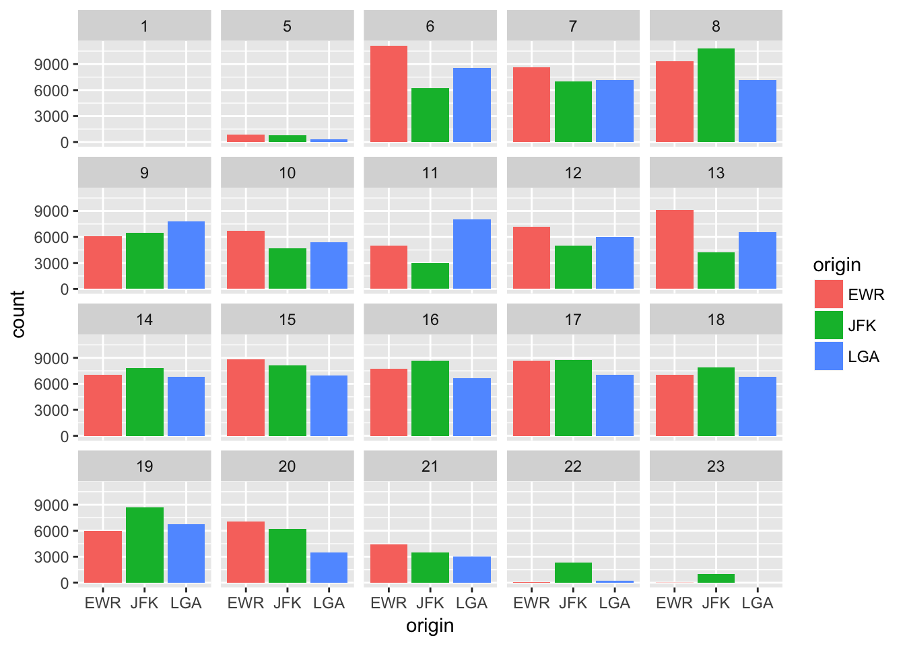
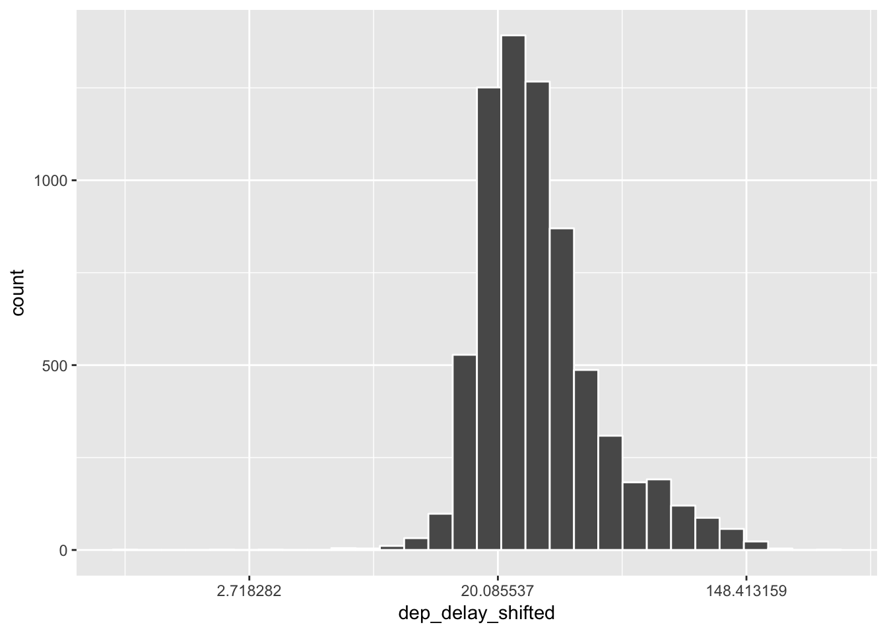
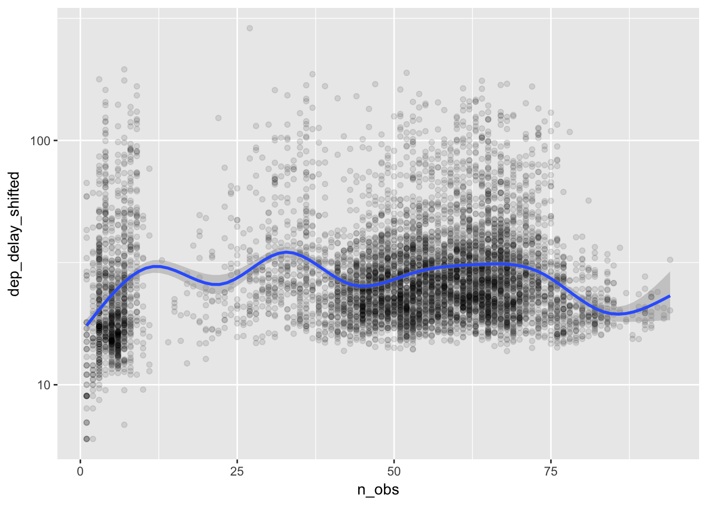

2.2 Arts & Crafts
Crafts
We will focus on six data wrangling functions in the dplyr package:
filter(): extracts rows (e.g., observations) of a data frame. We put logical vectors in its arguments.select(): extracts columns (e.g., variables) of a data frame. We put column names in its arguments.arrange(): orders rows of a data frame. We put column names in its arguments.summarise(): collapses a data frame into summary statistics. We put summary functions (e.g., statistics functions) using column names in its arguments.mutate(): creates new variables and adds them to the existing columns. We put window functions (e.g., transforming operations) using column names in its arguments.group_by(): assigns rows into groups within a data frame. We put column names in its arguments.
The very first argument in all these functions is a data frame, and by using this we can easily pipe a sequence of data wrangling operations through %>% operator. The key is to start with a data frame and then formulate a sequence of data wrangling operations in plain English, which we can translate into code by replacing then in the sequence with the %>% operator. Say, we want to find the average of delays in departures and arrivals from New York to the St. Paul-Minneapolis airport (MSP). We can construct the following sequence of instructions: take the flight data frame, apply filter() to extract the rows of flights to MSP, and then apply summarise() to calculate the mean.
flights %>% # take data frame "flights", then
filter(dest == "MSP") %>% # filter rows, then
summarise(
# summarise departure and arrival delays for their means
# and call them mean_dep_delay and mean_arr_delay respectively
mean_dep_delay = mean(dep_delay, na.rm = TRUE),
mean_arr_delay = mean(arr_delay, na.rm = TRUE)
) # calculate the mean, while removing NA values ## # A tibble: 1 × 2
## mean_dep_delay mean_arr_delay
## <dbl> <dbl>
## 1 13.32481 7.270169In summarise(), one can use summary functions that takes a vector as an input and produces a scaler as an output. This includes functions like mean(), sd() (standard deviation), quantile(), min(), max(), and n() (observation count in the dplyr package).
Each time we apply the %>% operator above, we pass a modified data frame from one data operation to another through the first argument. The above code is equivalent to
summarise( # data frame "flights" is inside filter(), which is inside summarise()
filter(flights, dest == "MSP"),
mean_dep_delay = mean(dep_delay, na.rm = TRUE),
mean_arr_delay = mean(arr_delay, na.rm = TRUE)
)## # A tibble: 1 × 2
## mean_dep_delay mean_arr_delay
## <dbl> <dbl>
## 1 13.32481 7.270169You will quickly discover that %>% operator makes the code much easier to read, write, and edit and how that might inspire you want to play with the data more.
Let’s add a few more lines to the previous example. Say, additionally we want to see the average delay by carrier and sort the results by the number of observations (e.g. flights) in descending order.
Okay, what do we do? We make a sequence of data wrangling operations in plain English and translate that into code by replacing then with %>% operator.
For example, we say, “take the data frame flights; then (%>%) filter() to extract the rows of flights to MSP; then (%>%) group rows by carrier; then (%>%) summarise() data for the number of observations and the means; then (%>%) arrange() the results by the observation count in descending order.”
flight_stats_MSP <- flights %>% # assign the results to an object named "flight_stats"
filter(dest == "MSP") %>%
group_by(carrier) %>% # group rows by carrier
summarise(
n_obs = n(), # count number of rows
mean_dep_delay = mean(dep_delay, na.rm = TRUE),
mean_arr_delay = mean(arr_delay, na.rm = TRUE)
) %>%
arrange(desc(n_obs)) # sort by n_obs in descending order
flight_stats_MSP # show flight_stats object## # A tibble: 6 × 4
## carrier n_obs mean_dep_delay mean_arr_delay
## <chr> <int> <dbl> <dbl>
## 1 DL 2864 10.651392 4.035702
## 2 EV 1773 17.093413 10.527995
## 3 MQ 1293 8.255457 9.559350
## 4 9E 1249 19.658113 8.089776
## 5 OO 4 0.750000 -2.000000
## 6 UA 2 -6.000000 -5.500000The carrier variable is expressed in the International Air Transportation Association (IATA) code, so let’s add a column of carrier names by joining another data frame called airlines. In RStudio, you can find this data frame under the Environment tab (in the upper right corner); switch the display option from Global Environment to package:nycflights13. To inspect the data frame, type View(airlines) in the R console. Also, by typing data() you can see a list of all datasets that are loaded with libraries.
left_join(flight_stats_MSP, airlines, by="carrier") %>%
# left_join(a,b, by="var") joins two data frames a, b by matching rows of b to a
# by identifier variable "var".
kable(digits=2) # kable() prints a better-looking table here| carrier | n_obs | mean_dep_delay | mean_arr_delay | name |
|---|---|---|---|---|
| DL | 2864 | 10.65 | 4.04 | Delta Air Lines Inc. |
| EV | 1773 | 17.09 | 10.53 | ExpressJet Airlines Inc. |
| MQ | 1293 | 8.26 | 9.56 | Envoy Air |
| 9E | 1249 | 19.66 | 8.09 | Endeavor Air Inc. |
| OO | 4 | 0.75 | -2.00 | SkyWest Airlines Inc. |
| UA | 2 | -6.00 | -5.50 | United Air Lines Inc. |
In the next example, we add new variables to flights using mutate().
flights %>%
# keep only columns named "dep_delay" and "arr_delay"
select(dep_delay, arr_delay) %>%
mutate(
gain = arr_delay - dep_delay,
gain_rank = round(percent_rank(gain), digits = 2)
# Note: we can immediately use the "gain" variable we just defined.
)## # A tibble: 336,776 × 4
## dep_delay arr_delay gain gain_rank
## <dbl> <dbl> <dbl> <dbl>
## 1 2 11 9 0.81
## 2 4 20 16 0.88
## 3 2 33 31 0.94
## 4 -1 -18 -17 0.22
## 5 -6 -25 -19 0.18
## 6 -4 12 16 0.88
## 7 -5 19 24 0.92
## 8 -3 -14 -11 0.37
## 9 -3 -8 -5 0.54
## 10 -2 8 10 0.82
## # ... with 336,766 more rowsWe extracted specific columns of flights by select() and added new columns defined in mutate(). mutate() differs from summarise() in that mutate() adds new columns to the data frame, while summarise() collapses the data frame into a summary table.
There are roughly five types of window functions that are commonly used inside mutate(): (1) summary functions, which are interpreted as a vector of repeated values (e.g., a column of an identical mean value): (2) ranking or ordering functions (e.g., row_number(), min_rank(), dense_rank(), cume_dist(), percent_rank(), and ntile()): (3) offset functions, say defining a lagged variable in time series data (lead() and lag()): (4) cumulative aggregates (e.g., cumsum(), cummin(), cummax(), cumall(), cumany(), and cummean()): (5) fixed-window rolling aggregates such as a windowed mean, median, etc. To find help files for these function, for example, type ?cumsum.
Before moving to the graphics, let’s quickly go over what a function is in R and how you can use a custom function inside summarise() or mutate(). In R, we use function() to create a function, which has its name, input arguments separated by comma, and a body (e.g., tasks to perform and what to return as an output).
your_function_name <- function(input arguments) {
task1
task2
.
.
.
output_to_return
} For a function having only a single expression to execute, we can omit brackets { }.
another_function <- function(input args) task_and_output_in_a_single_expression Let’s go through a few examples.
## [1] 1 2 3 4 5 6 7 8 9 10## [1] 1 2 3 4 5 6 7 8 9 10 NA NAmy_mean_1 <- function(x) mean(x, na.rm = TRUE)
# Input arguments: x
# Output: the calculation result of mean(x, na.rm = TRUE).
# x is required by mean() (and implicitly assumed to be a vector of numeric values).
# mean() is an existing function. The "na.rm" argument of mean() is set to be TRUE.
my_mean_1(vec1)## [1] 5.5my_mean_2 <- function(x, na.rm=TRUE) mean(x, na.rm = na.rm)
# Input arguments: x and na.rm (optional with the default value of TRUE)
# Output: the calculation result of mean(x, na.rm = na.rm).
# The input argument "na.rm" is passed to the input argument "na.rm" of mean()
my_mean_2(vec2)## [1] 5.5## [1] NAmy_zscore <- function(x, remove_na=TRUE) {
(x - my_mean_2(x, na.rm = remove_na))/sd(x, na.rm = remove_na)
}
# Inputs: x and remove_na (optional: default = TRUE)
# Output: z-score of vector x
# my_mean2() and sd() return scalers but are interpreted
# as a vector of repeated valuses that has the same length as x.
my_zscore(vec1) %>% round(2)## [1] -1.49 -1.16 -0.83 -0.50 -0.17 0.17 0.50 0.83 1.16 1.49Let’s apply functionsmy_mean_2() and my_zscore() in summarise() and mutate().
flights %>%
select(dep_delay) %>%
summarise(
mean_dep_delay = my_mean_2(dep_delay), # using my_mean_2()
mean_dep_delay_na = my_mean_2(dep_delay, na.rm = FALSE) # this returns NA
) %>%
kable(digits=2)| mean_dep_delay | mean_dep_delay_na |
|---|---|
| 12.64 | NA |
flights_gain <- flights %>%
select(dep_delay, arr_delay) %>%
mutate(
gain = arr_delay - dep_delay,
gain_z = (gain - my_mean_2(gain))/sd(gain, na.rm=TRUE), # using my_mean_2()
gain_z2 = my_zscore(gain_z) # using my_zscore()
)
head(flights_gain) %>% # show the first several rows
kable(digits=2)| dep_delay | arr_delay | gain | gain_z | gain_z2 |
|---|---|---|---|---|
| 2 | 11 | 9 | 0.81 | 0.81 |
| 4 | 20 | 16 | 1.20 | 1.20 |
| 2 | 33 | 31 | 2.03 | 2.03 |
| -1 | -18 | -17 | -0.63 | -0.63 |
| -6 | -25 | -19 | -0.74 | -0.74 |
| -4 | 12 | 16 | 1.20 | 1.20 |
Creating a function spares us from writing similar codes in multiple places. While avoiding such repetition is important for making reading and editing code easier, it also reduces coding errors.
A situation where you may consider using custom functions is inside functions like summarise_each() and mutate_each(). The two functions allow for applying summary functions like mean() or sd() to each column in a data frame. summarise_each() and mutate_each() work by calling a function by its name. They are very easy to use when an operation is to summarize a vector into a statistics without needing to specify additional arguments, say mean(var1). However, providing additional arguments into a function, say mean(var1, na.rm=TRUE), becomes somewhat cumbersome in terms of its syntax.
One approach to get around this problem is to pre-process the data frame before getting to a summarise_each() or mutate_each() section. For example, if we want to test the argument na.rm=TRUE to mean(), we can first filter out rows that contain missing values (NA) and then apply summarise_each().
flights_gain %>%
select(dep_delay, arr_delay, gain) %>%
filter(!is.na(dep_delay) & !is.na(arr_delay)) %>%
# filter out rows that have NA values in dep_delay or arr_deplay
summarise_each("mean") %>%
kable(digits=2) | dep_delay | arr_delay | gain |
|---|---|---|
| 12.56 | 6.9 | -5.66 |
The other approach is to use a custom function. For instance, my_mean_2() we defined above has the default argument na.rm=TRUE that gets passed into mean(), effectively overwriting the default argument na.rm=FALSE of mean(). A custom function (as well as any standard summary function) can be called in summarise_each() or mutate_each() using funs()
flights_gain %>%
select(dep_delay, arr_delay, gain) %>%
summarise_each(funs("my_mean_2")) %>%
kable(digits=2)| dep_delay | arr_delay | gain |
|---|---|---|
| 12.64 | 6.9 | -5.66 |
Being able to use your own functions in dplyr-style data wrangling operations will greatly enhance your ability to quickly analyze data in R.
Arts
Now we will cover the basics of data visualization via the ggplot2 package.
The ggplot2 syntax has three essential components for generating graphics: data, aes, and geom. This implements the following philosophy (a quote mentioned in ModernDive);
A statistical graphic is a mapping of data variables to aesthetic attributes of geometric objects.
— (Wilkinson 2005)
While coding complex graphics via ggplot() may appear intimidating at first, it boils down to the three primary components:
data: a data frame e.g., the first argument in
ggplot(data, ...).geom: geometric objects such as points, lines, bars, etc. with parameters given in the (), e.g.,
geom_point(),geom_line(),geom_histogram()aes: specifications for x-y variables, as well as variables to differentiate geom objects by color , shape, or size. e.g.,
aes(x = var_x, y = var_y, shape = var_z)
One can refine a plot figure by adding secondary components or characteristics such as
stat: data transformation, overlay of statistical inferences etc.
scales: scaling data points etc.
coord: Cartesian coordinates, polar coordinates, mapping projections etc.
facet: laying out multiple plot panels in a grid etc.
In what follows below, we will generate five common types of plots: scatter-plots, line-graphs, boxplots, histograms, and barplots. To provide a context, let’s use these plots to investigate what may explain patterns of flight departure delays.
First, let’s consider the possibility of congestion at an airport during certain times of the day or certain seasons. We can use barplots to see whether there is any obvious pattern in the flight distribution across flight origins (i.e., airports) in New York City with St. Paul-Minneapolis airport (MSP) as a destination. A barplot shows observation counts (e.g., rows) by category.
ggplot(data = flights, # the first argument is the data frame
mapping = aes(x = origin)) + # the second argument is "mapping", which is aes()
geom_bar() # after "+" piping operator of ggplot(), we add geom_XXX() elements 
We can make the plot more informative and aesthetic.
ggplot(data = flights,
mapping = aes(x = origin, fill = origin)) + # here "fill" gives bars distinct colors
geom_bar() +
facet_wrap( ~ hour) # "facet_wrap( ~ var)" generates a grid of plots by var 
Another way to see the same information is a histogram.
flights %>%
filter(hour >= 5) %>% # exclude hour earlier than 5 a.m.
ggplot(aes(x = hour, fill = origin)) + geom_histogram(binwidth = 1, color = "white") 
While mornings and late afternoons tend to get busy, there is not much difference in the number of flights across airports.
Let’s see if there are distinct patters of departure delays over the course of a year. We do this by taking the average of departure delays for each day by flight origin and plot the data as a time series using line-graphs.
delay_day <- flights %>%
group_by(origin, year, month, day) %>%
summarise(dep_delay = mean(dep_delay, na.rm = TRUE)) %>%
mutate(date = as.Date(paste(year, month, day), format="%Y %m %d")) %>%
filter(!is.na(dep_delay)) # exclude rows with dep_delay == NA
delay_day %>% # "facet_grid( var ~ .)" is similar to "facet_wrap( ~ var)"
ggplot(aes(x = date, y = dep_delay)) + geom_line() + facet_grid( origin ~ . ) 
The seasonal pattern seems similar across airports, and summer months appear to be busier on average. Across these airports, let’s see how closely these patterns are related to each other by focusing on a few summer months and making an overlap of the three line-graphs (EWR, JFK, and LGA).
delay_day %>%
filter("2013-07-01" <= date, "2013-08-31" >= date) %>%
ggplot(aes(x = date, y = dep_delay, color = origin)) + geom_line() 
We can see similar patterns of spikes across airports occurring on certain days, indicating a tendency for the three airports to get busy on the same days. Would this mean that the three airports tend to be congested at the same time?
In the previous figure, there seems to be some cyclical pattern of delays. A good place to start would be comparing delays by day of the week. Here is a function to calculate day of the week for a given date.
my_dow <- function(date) {
# as.POSIXlt(date)[['wday']] returns integers 0, 1, 2, .. 6, for Sun, Mon, ... Sat.
# We extract one item from a vector (Sun, Mon, ..., Sat) by position numbered from 1 to 7.
dow <- as.POSIXlt(date)[['wday']] + 1
c("Sun", "Mon", "Tue", "Wed", "Thu", "Fri", "Sat")[dow] # extract "dow"-th element
}
# Input: date in the format as in "2017-01-23"
# Output: day of week
Sys.Date() # Sys.Date() returns the current date ## [1] "2017-06-14"## [1] "Wed"Now, let’s take a look at the mean delay by day of the week using boxplots.
delay_day <- flights %>%
group_by(year, month, day) %>%
summarise(dep_delay = mean(dep_delay, na.rm = TRUE)) %>%
mutate(date = as.Date(paste(year, month, day), format="%Y %m %d"),
# date defined by as.Data() function
wday = my_dow(date),
weekend = wday %in% c("Sat", "Sun")
# %in% operator: A %in% B returns TRUE/FALSE for whether each element of A is in B.
)
# show the first 10 elements of "wday" variable in "delay_day" data frame
delay_day$wday[1:10] ## [1] "Tue" "Wed" "Thu" "Fri" "Sat" "Sun" "Mon" "Tue" "Wed" "Thu"delay_day$wday <- ordered(delay_day$wday,
levels = c("Mon", "Tue", "Wed", "Thu", "Fri", "Sat", "Sun"))
# adding a sorting order (Mon, Tue, ..., Sun)
delay_day$wday[1:10] ## [1] Tue Wed Thu Fri Sat Sun Mon Tue Wed Thu
## Levels: Mon < Tue < Wed < Thu < Fri < Sat < Sundelay_day %>%
filter(!is.na(dep_delay)) %>%
ggplot(aes(x = wday, y = dep_delay, fill = weekend)) + geom_boxplot() 
It appears that delays are on average longer on Thursdays and Fridays and shorter on Saturdays. This is plausible if more people are traveling on Thursdays and Fridays before the weekend, and less are traveling on Saturdays to enjoy the weekend. Are Saturdays really less busy? Let’s find out.
flights_wday <- flights %>%
mutate(date = as.Date(paste(year, month, day), format="%Y %m %d"),
wday = ordered(my_dow(date),
levels = c("Mon", "Tue", "Wed", "Thu", "Fri", "Sat", "Sun")),
weekend = wday %in% c("Sat", "Sun")
)
flights_wday %>%
group_by(wday) %>%
summarise( nobs = n() )## # A tibble: 7 × 2
## wday nobs
## <ord> <int>
## 1 Mon 50690
## 2 Tue 50422
## 3 Wed 50060
## 4 Thu 50219
## 5 Fri 50308
## 6 Sat 38720
## 7 Sun 46357
Yes, Saturdays are less busy for the airports in terms of flight numbers.
Could we generalize this positive relationship between the number of flights and the average delays, which we find across days of the week? To investigate this, we can summarize the data into the average delays by date-hour and see if the busyness of a particular hour of a particular day is correlated with the mean delay. We visualize these data using a scatter plot.
delay_day_hr <- flights %>%
group_by(year, month, day, hour) %>% # grouping by date-hour
summarise(
n_obs = n(),
dep_delay = mean(dep_delay, na.rm = TRUE)
) %>%
mutate(date = as.Date(paste(year, month, day), format="%Y %m %d"),
wday = my_dow(date)
)
plot_delay <- delay_day_hr %>%
filter(!is.na(dep_delay)) %>%
ggplot(aes(x = n_obs, y = dep_delay)) + geom_point(alpha = 0.1)
# plot of n_obs and the average dep_delay
# where each point represents an date-hour average
# "alpha = 0.1" controls the degree of transparency of points
plot_delay 
Along the horizontal axis, we can see how the number of flights is distributed across date-hours. Some days are busy, and some hours busier still. It appears that there are two clusters in the number of flights, showing very slow date-hours (e.g., less than 10 flights flying out of New York city per hour) and normal date-hours (e.g., about 50 to 70 flights per hour). We could guess that the delays in the slow hours are caused by bad weather. On the other hand, we may wonder if the excess delays in the normal hours, compared to the slow hours, are caused by congestion at the airports. To see this, let’s fit a curve that captures the relationships between n_obs and dep_delay. Our hypothesis is that the delay would become more likely and longer as the number of flights increases.
## `geom_smooth()` using method = 'gam'
We cannot see any clear pattern. How about fitting a curve by day of the week?
plot_delay +
# additional aes() argument for applying different colors to the day of the week
geom_smooth(aes(color = wday), se=FALSE) ## `geom_smooth()` using method = 'gam'
Surprisingly, the delay does not seem to increase with the flights. There are more delays on Thursdays and Fridays and less delays on Saturdays, but we see no evidence of flight congestion as a cause of delay.
Let’s take a closer look at the distribution of the delays. If it is not normally distributed, we may want to apply a transformation.
delay_day_hr %>% filter(!is.na(dep_delay)) %>%
ggplot(aes(x = dep_delay)) + geom_histogram(color = "white") ## `stat_bin()` using `bins = 30`. Pick better value with `binwidth`.
The distribution of the average delays are greatly skewed.
In applying a logarithmic transformation, here we have to shift the variable so that its minimum is greater than zero.
# define new column called "dep_delay_shifted"
delay_day_hr$dep_delay_shifted <- delay_day_hr %>%
with(dep_delay - min(dep_delay, na.rm = TRUE) + 1)
# with() function takes a data frame in the first argument and allows for
# referencing its variable names.
delay_day_hr %>%
ungroup() %>% # removing group_by() attribute
select(dep_delay, dep_delay_shifted) %>%
with(
apply(., 2, summary)
# apply(data, num, fun) applies function "fun" for each item
# in dimension "num" (1 = cows, 2= columns) of the data frame
# Data referenced by "." means all variables of the dataset inside with().
) %>% t() # transpose rows and columns ## Min. 1st Qu. Median Mean 3rd Qu. Max. NA's
## dep_delay -18 1.054 6.571 12.99 15.44 269 13
## dep_delay_shifted 1 20.050 25.570 31.99 34.44 288 13Now the transformed distribution;
# Under the log of 10 transformation, the distribution looks closer to a normal distribution.
delay_day_hr %>% filter(!is.na(dep_delay_shifted)) %>%
ggplot(aes(x = dep_delay_shifted)) +
scale_x_log10() +
geom_histogram(color = "white") ## `stat_bin()` using `bins = 30`. Pick better value with `binwidth`.
# Alternatively, one can apply the natural logarithm to transform a variable. Histogram shows no difference here.
delay_day_hr %>% filter(!is.na(dep_delay_shifted)) %>%
ggplot(aes(x = dep_delay_shifted)) +
scale_x_continuous(trans = "log") +
geom_histogram(color = "white")## `stat_bin()` using `bins = 30`. Pick better value with `binwidth`.
The transformed distribution is much less skewed than the original. Now, let’s plot the relationship between delays and flights again.
delay_day_hr %>% filter(!is.na(dep_delay_shifted), dep_delay_shifted > 5) %>%
ggplot(aes(x = n_obs, y = dep_delay_shifted)) +
scale_y_log10() + # using transformation scale_y_log10()
geom_point(alpha = 0.1) +
geom_smooth() ## `geom_smooth()` using method = 'gam'
We still do not see a pattern that busier hours have more delays. This seems to suggest that the airports in New York City manage the fluctuating number of flights without causing congestion.
References
Wilkinson, Leland. 2005. The Grammar of Graphics.